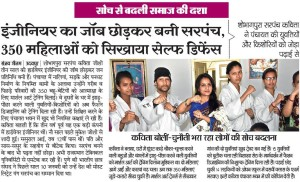

Kavita Sharma Joshi joined Techno NJR as a student of B.Tech (Electrical & Electronics branch) in the year 2008. When she was in I year, she got married, but continued her education to complete B. Tech in 2012. She was one the four students who got selected by Secure Meters as a student intern when in 3rd year. She attended college from 8 am to 3 pm and worked at Secure Meters from 3 to 7 pm. While managing her studies at Techno NJR and internship at Secure Meters, she managed her home also.
She is doing wonderful job as Sarpanch of Sobhagpura area in Udaipur education underpriviledged girls of her area. For her work, she has won many awards and praise from CM and Governor of Rajasthan.
Nidarshana Sharma brought many laurels to the college while studying for B.Tech in Nidarshana sharmaComputer Science & Engineering during the years 2012-2016. She was MC for most of college events, Founding member of Techno NJR’s Toastmaster club , regular writer on Udaipurblog and a good student. She got selected in India Air Force while in final year at the college. She has completed her Flying training and is serving as Flying officer in IAF.
One of the successful start up in Udaipur is Udaipurblog.com UBLogowhich has more 2 lac following and is the most popular udaipur focussed website. Udaipurblog was started by Sanjit Chouhan when he was in his second year of B.Tech at Techno NJR. Sanjit completed his B.Tech in Computer Science & Engineering in the year 2016 and has expanded Udaipurblog activities to include event management also.